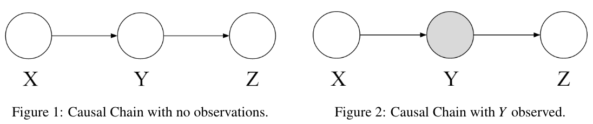
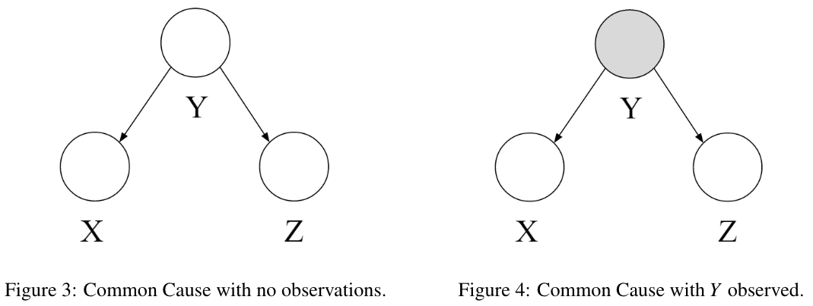
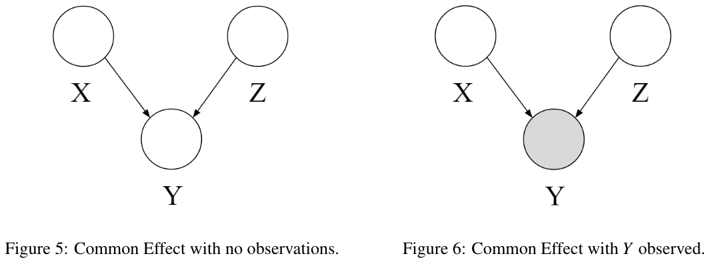
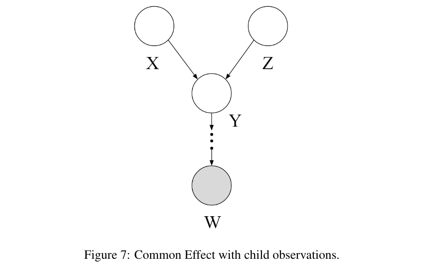
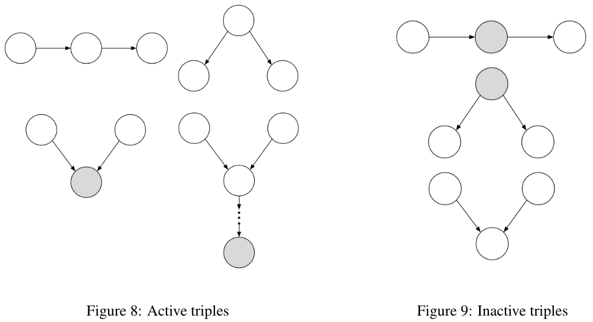
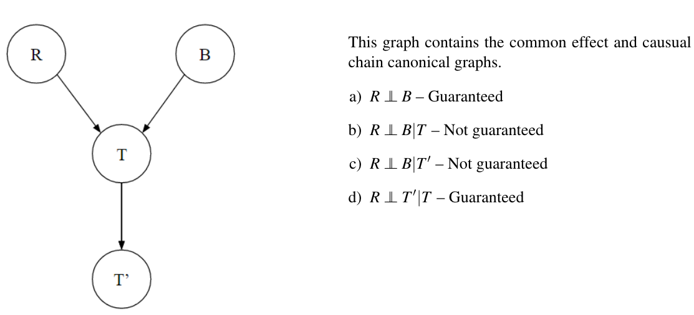
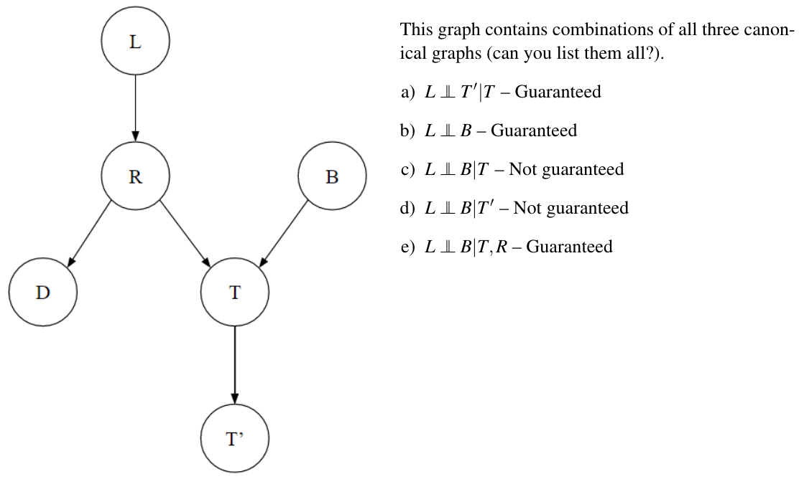
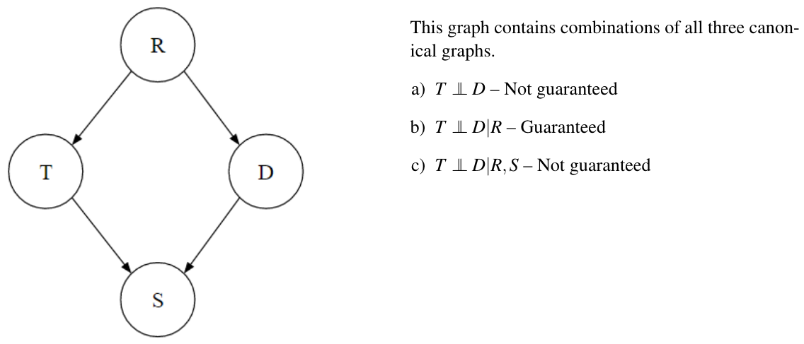

BN: Independence
D-Separation
A node is conditionally independent of all its ancestor nodes in the graph given all of its parents.
Causal Chains

Figure 1 is a configuration of three nodes known as a causal chain.
X and Z are not guaranteed to be independent.
However, we can make the statement that \(X \newcommand{\indep}{\perp \!\!\! \perp} \indep Z \mid Y\).
例子
未观察中间节点：
- 你有一个朋友 \(Y\), 他受你的情绪 \(X\) 影响（如果你开心, 他也开心）, 同时他也会影响他家里的宠物 \(Z\) (他开心时宠物也高兴)。
- 如果你不知道朋友 \(Y\) 的情绪, 你只能猜测你自己的情绪可能通过朋友影响到了宠物。因此, \(X\) 和 \(Z\) 之间有一种关联。
观察中间节点：
- 现在, 你知道了朋友 \(Y\) 的情绪。无论你如何情绪, 你只需要看朋友的情绪来判断宠物的状态。因此, 知道了 \(Y\) 之后, \(X\) 和 \(Z\) 之间就没有直接关系了。
Common Cause

X is not guaranteed to be independent of Z.
\(X \indep Z \mid Y\): X and Z are independent if Y is observed.
例子
- 假设 \(Y\) 是天气, \(X\) 是人们是否带伞, \(Z\) 是地面是否湿滑。天气影响人们是否带伞（如果天气预报下雨, 人们会带伞), 也影响地面是否湿滑（如果下雨, 地面会湿滑)。
- 如果你不知道天气（未观察 \(Y\) ), 你可能会发现带伞和地面湿滑之间有某种关联（因为它们都受天气影响)。
- 但如果你知道天气情况 (观察 \(Y\) ), 比如知道今天下雨, 那么带伞和地面湿滑的关系就变得独立了 (知道了天气, 你不需要通过看地面来判断是否需要带伞)。
Common Effect

In the configuration shown in Figure 5, X and Z are independent: \(X \indep Z\)
However, they are not necessarily independent when conditioned on Y.
Example:
and \(Y\) is determined by whether \(X\) and \(Z\) have the same value:
Then X and Z are independent if Y is unobserved. But if Y is observed, then knowing X tells you about Z. So X and Z are not conditionally independent given Y.
This same logic applies when conditioning on descendants of Y in the graph. If one of Y’s descendant nodes is observed, as in Figure 7, X and Z are not guaranteed to be independent.

General Case, and D-Separation
We formulate the problem as follows:
Problem
Given a Bayes Net \(G\), two nodes \(X\) and \(Y\), and a (possibly empty) set of observed nodes \(\left \{ Z_1, \dots, Z_k \right \}\), must the following statement be true: \(X \indep Y \mid \left \{ Z_1, \dots, Z_k \right \}\)?
D-Separation(Directed Separation): If a set of variables \(Z_1, \dots, Z_k\) d-separates \(X\) and \(Y\), then \(X \indep Y \mid \left \{ Z_1, \dots, Z_k \right \}\). in all possible distributions that can be encoded by the Bayes Net.
D-Separation Algorithm
- Shade all observed nodes \(\left\{Z_1, \ldots, Z_k\right\}\) in the graph.
- Enumerate all undirected paths from \(X\) to \(Y\).
- For each path:
- Decompose the path into triples (segments of 3 nodes).
- If all triples are active, this path is active and d-connects \(X\) to \(Y\).
- If no path d-connects \(X\) and \(Y\), then \(X\) and \(Y\) are d-separated, so they are conditionally independent given \(\left\{Z_1, \ldots, Z_k\right\}\)
Any path in a graph from X to Y can be decomposed into a set of 3 consecutive nodes and 2 edges - each of which is called a triple.
A triple is active or inactive depending on whether or not the middle node is observed.

Examples


